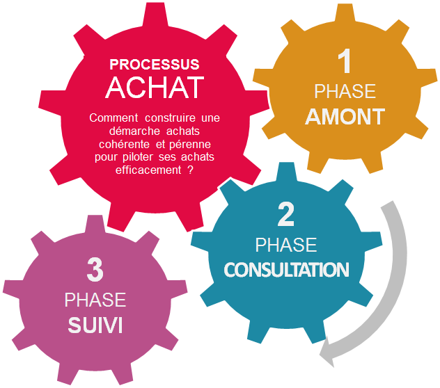

Présentation DTA Formation

Partie: Processus Appel Offre
Rationalisation par les achats & De forts enjeux pour les ESN

Naissance du besoin
Le role du commercial
Ingenieur commercial, daffaires,
account manager... plusieurs
nom designe le commercial.
Cest la personne qui trouve les
clients, developpe les affaires,
presente les candidats et gere la
relation avec les clients.
Parfois, cest lui qui est votre
responsable direct.
Lavant-vente
Equipe de reponse : pilote de la
reponse, contributeurs,
responsable, commercial
Types de reponses : CV ou
dossier technique complexe ?
Investissements : temps,
ressources, arbitrages, POC, etc.
Lexpression du besoin
Lexpression de besoins est le premier document
produit, avant mmme le commencement du projet
Determine le lancement ou non du projet selon
La pertinence des besoins exprimes
Le ROI Return Of Investment
Matiere premiere du Cahier des Charges
Destinee dabord aux decideurs qui devront arbitrer
sur le demarrage du projet
Destinee ensuite à la MOE

Naissance du projet
Le cahier des charges
La reponse à appel doffre
La soutenance